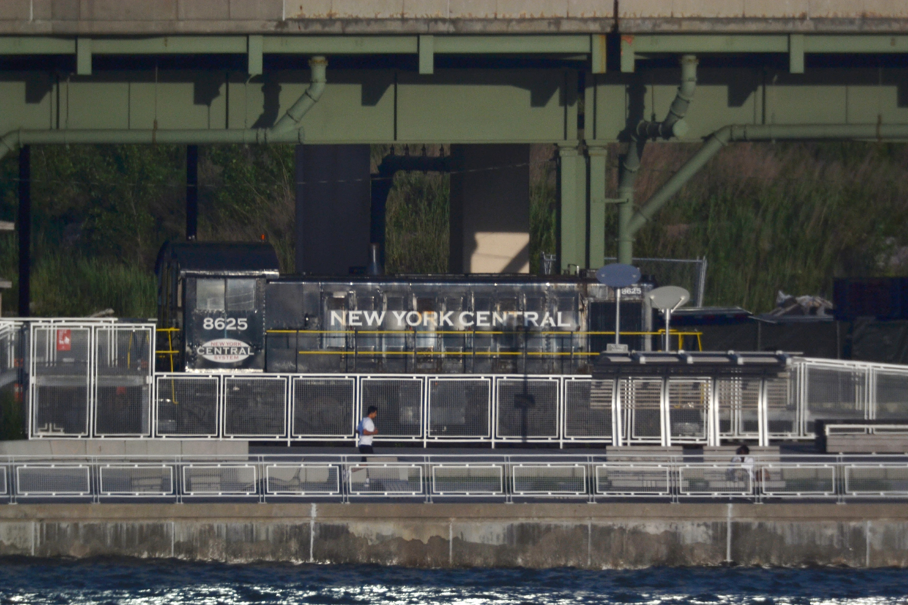

locomotive in the River Side Park South in Manhattan. When you double click on the image you will see the clearly resolved smaller number “8625” (there are two them), as well as the words “NEW YORK” and “SYSTEM” in red color. Note that these features cannot be seen on the picture shown under the above link. The telescope I used for the experiment is capable of magnifications exceeding 200x; the reason for utilizing only half of that was the simplicity of setup. I have effectively used the telescope as a 2,032mm telephoto lens.
"
data-link="telescope_experiment_pictures/TExperiment2.jpg">